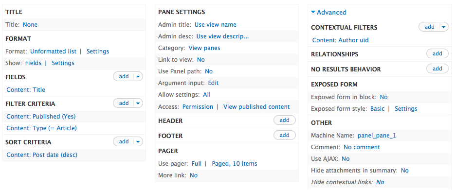
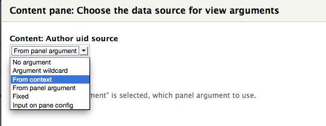
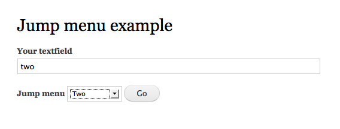

Describe an idea.
Five, seven, five syllables.
End it with a twist.
What's a haiku?
Drupal Haikus
Hello D6 site!
Are your modules up to date?
… I’ll need some coffee.
Drupal Haikus
drupal_execute(),
the only hammer you need.
Where’d these screws come from?
Drupal Haikus
div class class div class
div span words close span close div
close div close div sigh
What's a plugin?
Plugins add discrete
abilities to your site.
Assembly required.
Steve Persch

- @stevector on Drupal.org, Twitter and Github
- Senior Engineer at Palantir.net

Our mission at Palantir is to empower and enable people everywhere to share information through highly functional websites and interactive software.
Pedro Cambra
- @pcambra on Drupal.org and Twitter
- Drupal Commerce developer at Commerce Guys
- Community elected Drupal Association board member
Obligatory shout-out to Earl Miles
merlinofchaos on Drupal.org

- Views
- CTools
- Panels
- Panels Everywhere
- Panelizer
- Nodequeue
- Advanced Help
What is CTools?
Acronym for Chaos Tools
This suite is primarily a set of APIs and tools to improve the developer experience. All these enhancements have grown far more than just Panels and some of them have been or are being included in Drupal Core.
D8 Plugin System Deep Dive session
First of many reminders in this presentation
Presented by:
- Kris Vanderwater - EclipseGc
- James Gilliland - neclimdul
- Tim Plunkett - tim.plunkett
- Alex Bronstein - effulgentsia
Panels universe
Control your layout
With in-browser editing.
Drupal 8’s White Whale.
In-browser layout editing

You want to control the layout of Articles
Put an author name and picture in the side bar.

Panels starts with a complex screen
Set conditions for selecting the variant

Add more contexts

Pick a Layout

Put stuff in the layout
Did it work?

If it didn't work...
- Try Googling the problem
- Maybe StackExchange knows
- Drupal.org issue queue
- Read Documentation
- Ask a co-worker
- Ask IRC
- Look at the code
Once the code is open you could...
- dsm()/dpm anywhere/everywhere
- Check for clues in template files
- Use an IDE's debugger
- Go straight for the plugin file
Maybe the access plugin is not working
Access Plugins
Give it a context
And some configuration.
Get back TRUE or FALSE.
Access Plugins
Return TRUE or FALSE
function _simplified_ctools_node_type_ctools_access_check($conf, $context) {
$node = $context->data;
if (array_key_exists($node->type, $conf['type'])) {
return TRUE;
}
else {
return FALSE;
}
}
Debugging plugins
The plugin exists
to implement one function.
Debug in there first.
Functions in the node_type access plugin
ctools_node_type_ctools_access_settings($form, &$form_state, $conf);
ctools_node_type_ctools_access_settings_submit($form, &$form_state);
ctools_node_type_ctools_access_check($conf, $context);
ctools_node_type_ctools_access_restrictions($conf, &$context);
ctools_node_type_ctools_access_summary($conf, $context);
Wait, what's a context?
Context Plugins
With standard classes,
we don’t know an object’s type.
Wrap and label it.
Context Plugin code
function _simplified_ctools_context_create_node($empty, $data = NULL, $conf = FALSE) {
$nid = is_array($data) && isset($data['nid']) ? $data['nid'] : (is_object($data) ? $data->nid : 0);
$node = node_load($nid);
$context = new ctools_context('node');
$context->plugin = 'node';
$context->data = $node;
$context->title = $node->title;
$context->argument = $node->nid;
$context->restrictions['type'] = array($node->type);
return $context;
}
Second Reminder
Go to the D8 Plugin System Deep Dive session
Presented by:
- Kris Vanderwater - EclipseGc
- James Gilliland - neclimdul
- Tim Plunkett - tim.plunkett
- Alex Bronstein - effulgentsia
Relationships
Relationship Plugins
Pass in a context,
and get another context.
It is that simple.
Node to Author relationship
function _simplified_ctools_user_from_node_context($context, $conf) {
$node = $context->data;
$uid = $node->uid;
$account = user_load($uid);
return ctools_context_create('user', $account);
}
Content Type Plugins
No, the other kind of "content type"

Content Type Plugins
Returns some markup,
Wrapped in a standard object.
Sorry for the name.
Content Type Plugins
No, the other kind of "content type"
function _simplified_ctools_node_content_type_render($subtype, $conf, $panel_args) {
$nid = $conf['nid'];
$node = node_load($nid);
$block = new stdClass();
$block->delta = $node->nid;
$block->title = check_plain($node->title);
$block->content = node_view($node, $conf['build_mode']);
return $block;
}
Where to begin debugging?
Remember, we're just concatenating strings
ctools_node_content_type_render($subtype, $conf, $panel_args);
ctools_node_content_type_edit_form($form, &$form_state);
ctools_node_content_type_edit_form_validate(&$form, &$form_state);
ctools_node_content_type_edit_form_submit($form, &$form_state);
ctools_node_content_type_admin_title($subtype, $conf);
ctools_node_content_type_admin_info($subtype, $conf);
A repeated haiku
The plugin exists
to implement one function.
Debug in there first.
One more content type example
Views Content Panes

Where does the argument come from?

Only check the boxes you know you need

On the Panels side

Go straight to the big render function
Outside Panels universe
It’s not just Panels.
Plugins can enhance much more.
Extend your mind too.
Exportables
Make data export
part of your contrib modules.
Get UI for free
Custom Access Rulesets and Export UI

Declaring bean types
/**
* Implements hook_bean_types().
*/
function bean_twitter_pull_bean_types() {
$plugins = array();
$plugin_path = drupal_get_path('module', 'bean_twitter_pull') . '/plugins/bean';
$plugins['twitter_pull'] = array(
'label' => t('Twitter Pull'),
'handler' => array(
'class' => 'TwitterPullBean',
'parent' => 'bean',
),
'path' => $plugin_path,
'file' => 'bean_twitter_pull.inc',
);
return $plugins;
}
Bean plugin details
class TwitterPullBean extends BeanPlugin {
/**
* Declares default block settings.
*/
public function values() { (…) }
/**
* Builds extra settings for the block edit form.
*/
public function form($bean, $form, &$form_state) { (…) }
/**
* Displays the bean.
*/
public function view($bean, $content, $view_mode = 'default', $langcode = NULL) {
$content['twitter_results']['#markup'] = twitter_pull_render($bean->settings['twitkey'],
FALSE, $bean->settings['num_items']);
return $content;
}
}
Bean
Beans are not nodes but
block fieldable entities
Provide your own type.
Altering entity reference widget forms
How a plugin approach helps?

Entity Reference widget plugin selection

Entity Reference widget plugin selection
class EntityReference_SelectionHandler_Generic_commerce_coupon
extends EntityReference_SelectionHandler_Generic {
public function buildEntityFieldQuery($match = NULL, $match_operator = 'CONTAINS') {
$query = parent::buildEntityFieldQuery($match, $match_operator);
if (isset($match)) {
$query->fieldCondition('commerce_coupon_code', 'value',
$match, $match_operator);
}
return $query;
}
public function getLabel($entity) {
$wrapper = entity_metadata_wrapper('commerce_coupon', $entity);
return $wrapper->commerce_coupon_code->value();
}
Entity Reference
Even field module
Has plugins extending it.
Beats huge form alters.
Feeds
Fetch, process and parse;
such is life for feed plugins.
You must declare yours.
Views Bulk Operations
Adds a field handler
For a checkbox on each row.
Process with actions.
How to create your own plugins
Start implementing hook_ctools_plugin_type. Documentation.
function views_bulk_operations_ctools_plugin_type() {
return array(
'operation_types' => array(
'classes' => array(
'handler',
),
),
);
}
function addressfield_ctools_plugin_type() {
$plugins['format'] = array(
'load themes' => TRUE,
);
return $plugins;
}
How to create your own plugins
Create a plugin structure in the module.
How to create your own plugins
Declare your plugin classes in a plugin.inc file.
$plugin = array(
'title' => t('Action'),
'list callback' => 'views_bulk_operations_operation_action_list',
'handler' => array(
'file' => 'action.class.php',
'class' => 'ViewsBulkOperationsAction',
),
);
How to create your own plugins
Add a class.php file with the methods needed.
class ViewsBulkOperationsAction extends ViewsBulkOperationsBaseOperation {
(…)
public function access($account) {
if (module_exists('actions_permissions')) {
$perm = actions_permissions_get_perm($this->operationInfo['label'], $this->operationInfo['key']);
if (!user_access($perm, $account)) {
return FALSE;
}
}
if (!empty($this->operationInfo['permissions'])) {
foreach ($this->operationInfo['permissions'] as $perm) {
if (!user_access($perm, $account)) {
return FALSE;
}
}
}
return TRUE;
}
(…)
}
How to create your own plugins
Example of use of the plugin.
function views_bulk_operations_get_operation_type($operation_type) {
ctools_include('plugins');
return ctools_get_plugins('views_bulk_operations', 'operation_types', $operation_type);
}
public function get_selected_operations() {
global $user;
$selected = drupal_static(__FUNCTION__);
if (!isset($selected)) {
(…)
$operation = views_bulk_operations_get_operation($operation_id, $entity_type, $options);
if (!$operation || !$operation->access($user)) {
continue;
}
$selected[$operation_id] = $operation;
(…)
return $selected;
}
Drag all the kittens!
DraggableViews
Use the crosshair to
drag and drop your result rows.
Sort plugins will help.
Draggableviews sort plugin
class mymodule_list_handler extends draggableviews_handler {
public function get($field, $index) {
return mymodule_list_preprocess($index);
}
function set($form_state) {
$sort_keys = array();
$view = $form_state['build_info']['args'][0];
$list = unserialize($view->args[2]);
$original_lines = $list->lines;
// Generate a helper array to sort the rows as the user has set them.
$sort_keys = mymodule_list_generate_sort_keys($form_state['values']['draggableviews']);
usort($list->lines, function($a, $b) use ($sort_keys) {
return ($sort_keys[$a->reference]['weight'] > $sort_keys[$b->reference]['weight']);
});
// Save the list if there's any change.
if ($list->lines <> $original_lines) {
mymodule_update_list($list);
}
}
}
How do facets look like?
Facet API plugin example
Remove facets that don't narrow any result.
Facet API filter plugin

Facet API plugin example
Remove facets that don't narrow any result.
Facet API narrow results plugin
class FacetapiFilterNarrowResults extends FacetapiFilter {
(...)
/**
* Removes items that do not narrow search results.
*/
protected function removeNotNarrowItems(&$items) {
foreach ($items as $key => $item) {
// Run recursively cleanup on all children.
if (!empty($item['#item_children'])) {
$this->removeNotNarrowItems($item['#item_children']);
}
// If item does not narrow results, does not have children and is
// not active we remove it.
if ($item['#count'] == $this->count && empty($item['#item_children']) && !$item['#active']) {
unset($items[$key]);
}
}
}
}
Facet API plugin types
- Adapters
- Manage dependencies
- Empty behavior
- Filters
- Backend query alterations (query types)
- URL processors
- Widgets
Facet API
Make your search pages
more rich and interesting
Just… one… more… facet.
Addressfield
Flexible address
to make zipcode optional.
With formats you win
OpenLayers map layers & styles
OpenLayers map behaviors
OpenLayers behavior plugin example
OpenLayers Feature Popups
Hover effects
OpenLayers Feature Popups
Persistent popups
Open Layers
On a map layer
anything can be displayed.
JS is precious.
OpenLayers behavior plugins
/**
* Ctools plugin definition.
*/
function olfp_openlayers_behavior_fp_openlayers_behaviors() {
return array(
'title' => t('OL Feature Popups'),
'description' => t('OL Feature Popups: Provide an easy way to manage popups.'),
'type' => 'layer',
'behavior' => array(
'file' => 'openlayers_behavior_fp.inc',
'class' => 'openlayers_behavior_fp',
'parent' => 'openlayers_behavior',
),
'group' => 'Info boxes'
);
}
OpenLayers behavior plugins
/**
* Attribution Behavior
*/
class openlayers_behavior_fp extends openlayers_behavior {
function options_init() {(…)}
function options_form() {(…)}
/**
* Render.
*/
function render(&$map) {
// Add the OL Feature Popups extension.
if ($path = _olfp_get_path()) {
drupal_add_js($path . '/lib/patches_OL-popup-autosize.js');
drupal_add_js($path . '/lib/FeaturePopups.js');
}
drupal_add_css(drupal_get_path('module', 'olfp') . '/olfp.css', array('weight' => 12));
drupal_add_js(drupal_get_path('module', 'olfp') .
'/openlayers_plugins/behaviors/openlayers_behavior_fp.js', array('weight' => 12));
return $this->options;
}
}
Wait, there is more!
Other modules providing plugins support
Extra ball
Ctools is much more than plugins
Modal windows
User attention
Goes to the piece that pops up.
Don’t modal all things.
Modals with CTools
Declare your modal callback with hook_menu()
function simple_ass_modal_menu() {
$items = array();
$items['simple_ass_modal/%ctools_js/test'] = array(
'title' => 'Modal test',
'page callback' => 'simple_ass_modal_page',
'access arguments' => array('access content'),
'type' => MENU_CALLBACK,
);
return $items;
}
Modals with CTools
Declare your modal callback with hook_menu()
function simple_ass_modal_page() {
ctools_include('ajax');
ctools_include('modal');
ctools_modal_add_js();
$custom_style = array(
'my-simple-ass-modal-style' => array(
'modalSize' => array(
'type' => 'fixed',
'width' => 425,
'height' => 250,
),
'animation' => 'fadeIn',
),
);
drupal_add_js($custom_style, 'setting');
$output = ctools_modal_text_button(t('Click Here'), 'simple_ass_modal/nojs/test/form',
t('Pop me up'), 'ctools-modal-my-simple-ass-modal-style');
$output .= '<div id="modal-message"> </div>';
ctools_include('plugins');
return $output;
}
Jump menus
Create a jump menu easily with CTools


Jump menus
Declare your modal callback with hook_menu()
function ctools_example_jump_menu_page($form, &$form_state) {
$form = array();
$form['text'] = array(
'#type' => 'textfield',
'#title' => t('Your textfield'),
'#default_value' => check_plain(arg(2)),
);
$targets = array(
'/ctools_example/jump_menu/one' => t('One'),
'/ctools_example/jump_menu/two' => t('Two'),
'/ctools_example/jump_menu/three' => t('Three'),
);
ctools_include('jump-menu');
$form['jump_menu'] = drupal_get_form('ctools_jump_menu', $targets, array());
return $form;
}
But also all these other cool things
- Exportables
- Object caching
- Form wizard
- CSS Tools
- Dropdown buttons
- Extra ajax commands
- Entity autocomplete helper
Drupal 8 showtime!
Ctools is much more than plugins
Go to the D8 Plugin System Deep Dive
We mean it, seriously
Presented by:
- Kris Vanderwater - EclipseGc
- James Gilliland - neclimdul
- Tim Plunkett - tim.plunkett
- Alex Bronstein - effulgentsia
Questions? (search for a good image here)
<Thank You!>
What did you think?
Evaluate this session at: portland2013.drupal.org/schedule